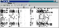

|
|
| 当前位置：电脑报电子版 > 1999 年 > 45 期 > 软件世界 > 系统进程监视利器——PrcView |
| 《 系统进程监视利器——PrcView 》 |
| 近日发现了一个小软件：PrcView，初试之下就发现其功能强大和操作简便。笔者认为它是Windows 9x操作系统中必不可少的系统进程监视利器，因此推荐给大家。 PrcView主要用于显示当前系统中的程序或进程，包括加载的相关DLL动态链接文件（如图）。首先来看看其主要功能： 1.显示当前加载程序或DLL的名称、PID号、优先级、线程数量、类型（16位还是32位的程序）以及完整的文件路径； 2.双击任一文件名可以看到加载程序或DLL文件的模块版本信息，包括文件版本号、版本信息、公司名称、产品名称及其描述等； 3.对任何程序或DLL进程文件进行强行终止、改变优先级等操作，不受Windows系统的影响。再来看看它的使用方法：直接打开PrcView.exe文件，可看到当前正在运行的程序和加载的进程。选中某个子项，然后你可根据需要进行各种操作： 菜单“File”中“Save”可将当前进程保存到一个txt类型文件中，以便将来对照。 菜单“View”中有五个选项：“Process Trees”是进程树，呈现当前进程的树状结构；“Module Usage”是显示当前模块的使用情况，包括更具体的DLL详细清单；“Applications”是显示当前正在运行的程序；另外，“Refresh”（或F5）是刷新当前进程（程序提供自动刷新功能），“Option”是程序设置。 菜单“Process”中主要是对选中程序或进程的详细操作，这里就不一一介绍了。 菜单“Help”中有帮助信息和版本号。 菜单下还提供一快捷图标栏，左边两个是：“刷新系统进程”、“保存当前程序清单”，接下来的三个是“显示线程”、“显示模块”和“显示内存情况”，然后是“强行终止进程”、“调试进程”、“设置优先级”，最后是“显示进程树”、“显示模块使用情况”、“显示应用程序”以及“查找进程”，对应的功能一目了然。 此程序最大的优点是可以防止骇客的恶意程序的进驻。通过对当前进程的观察可发现一些可疑程序，包括各种骇客、木马和恶作剧程序，通过完整路径可方便将“不速之客”找出来“待审”。笔者就曾通过此软件查找出计算机里名为“love.exe”的远程监控程序，该程序不会在按下“Ctrl－Alt－Del”的对话框里出现，当Windows启动后用普通方法也无法终止其进程。 PrcView使用方便，它小巧的“身材"（主程序仅90多K）并不影响它卓越的表现。目前版本是3.2.1.3，下载地址为： http://www.teamcti.com/pview/。大家使用过程中有何问题可来信交流，我的信箱是：flyingstar@21cn.com （四川 陈可） |
| 下载本期推荐软件 | 页 首 |
| 《电脑报》版权所有，电脑报网站编辑部设计制作发布 |